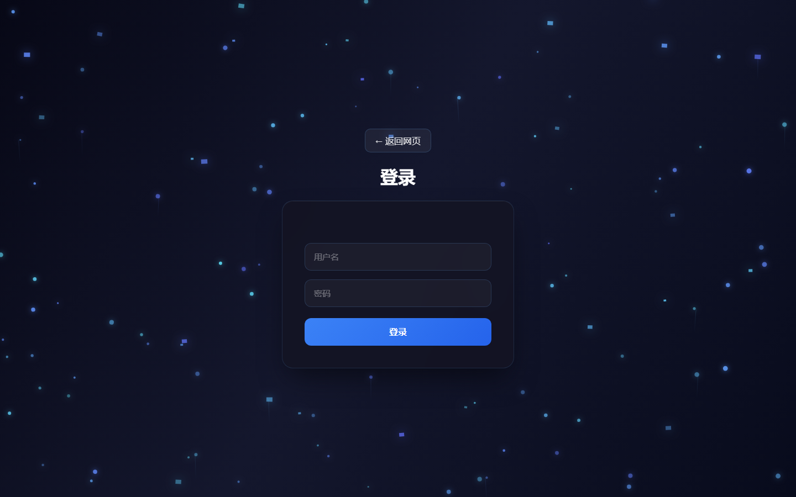
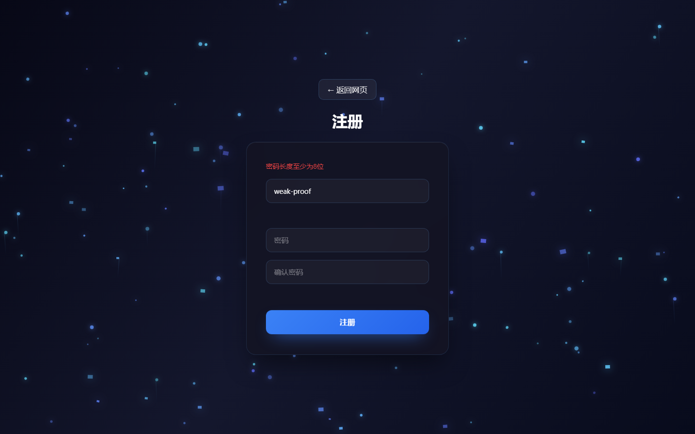
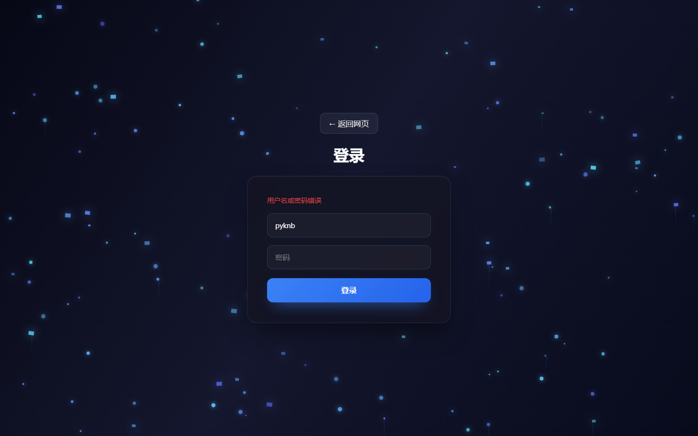
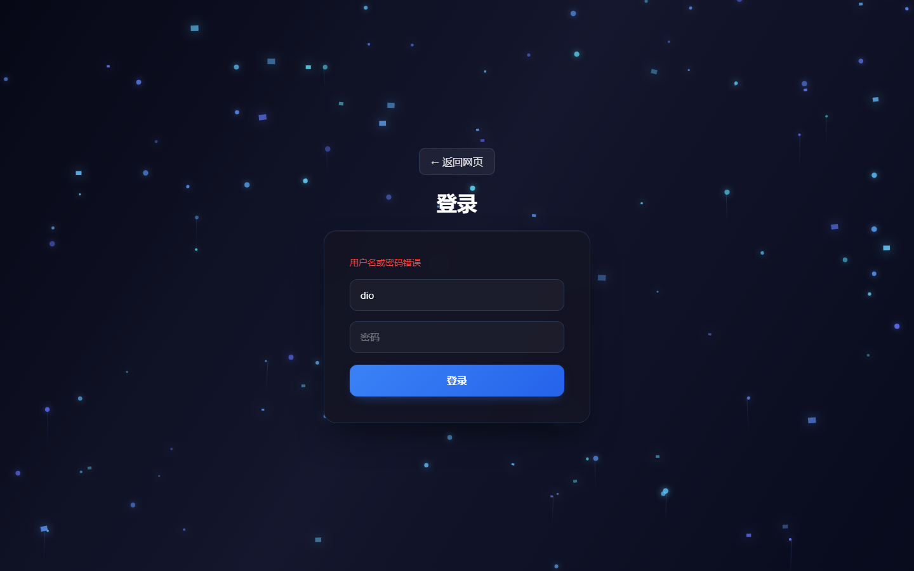
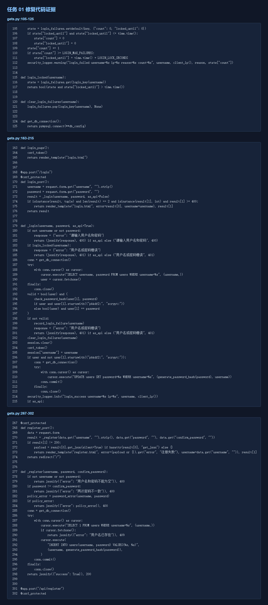

本报告针对阶段二任务1，仅在授权的本机课程靶场中完成。
URL/接口：/login、/register、/api/login、/api/register
请求方法：GET/POST/DELETE（按接口实际方法）
关键参数：username、password、filename、file、csrf_token（按任务适用）
所属功能：认证
先使用正常账号和合法参数完成对应功能，再仅修改一个测试参数。请求记录和页面证据见附件目录。
1. 启动本机网盘并登录课程测试账号。
2. 按任务说明构造单一无害测试参数。
3. 发送请求并记录状态码、页面、文件或会话变化。
4. 使用修复后的同一参数再次验证。
历史账号存在 dio/dio、zxrnb/123456 等弱密码；修复前可直接登录。修复后连续5次错误返回401并锁定，弱密码注册返回400。
gets.py 的 _login、_register 缺少密码策略、失败计数和安全日志。
影响范围限于本机课程靶场及测试账号；不得外推为公网系统影响。具体后果取决于接口是否需要登录及资源归属。
增加8位及字母数字密码策略、弱口令黑名单、5次/5分钟锁定、统一错误提示、登录日志；历史明文密码成功登录后升级哈希。




